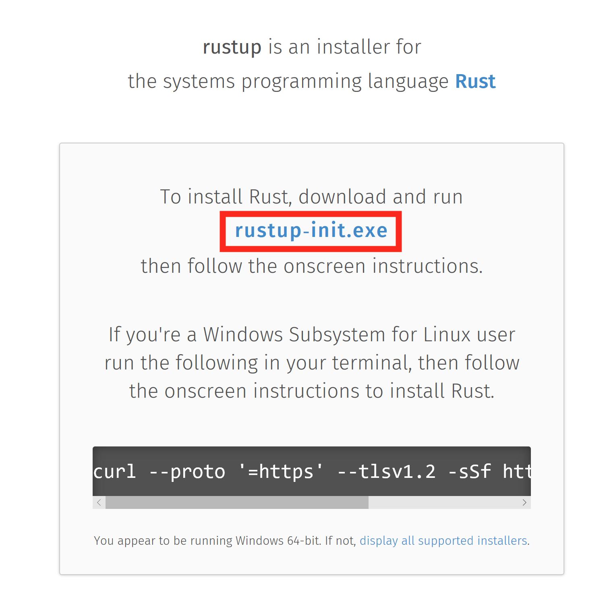
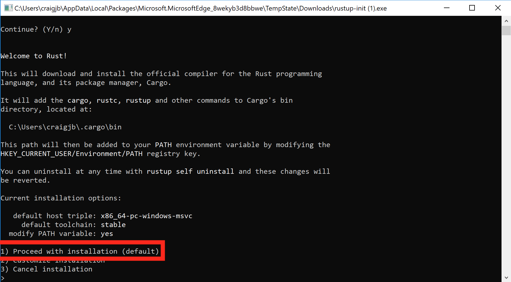
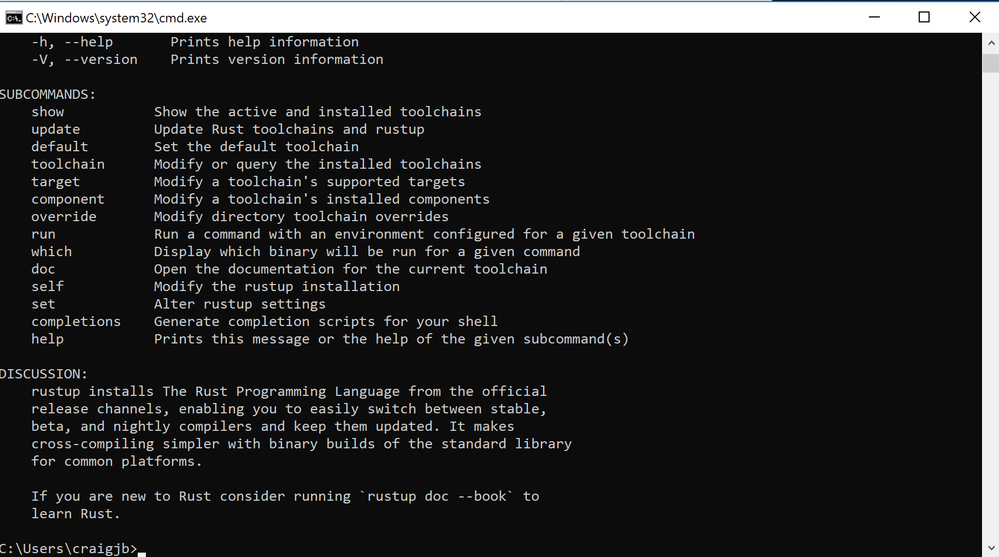
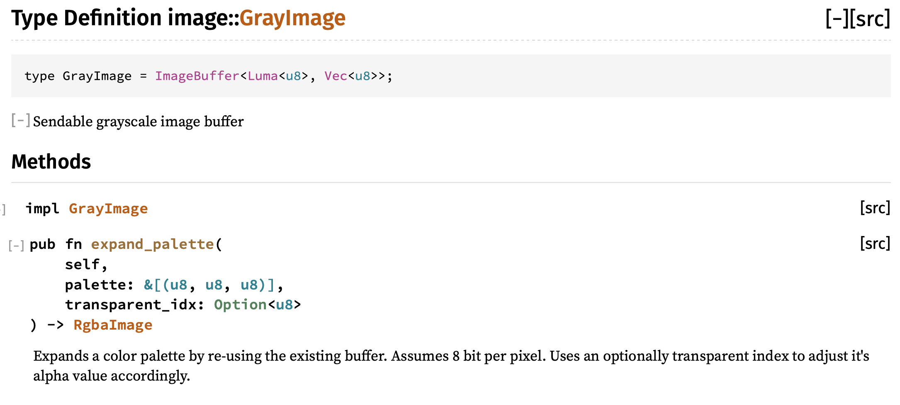

Rust is a safe, typed, compiled, general programming language.
- Safe is a very overloaded term in Rust, but by default Rust uses static analysis at compile time to enforces rules about memory usage. Traditionally, managing your own memory in languages like C++ and Objective-C has been very tedious and still error prone. Rust's solution to this, The borrow checker, is probably the defining feature of the Rust language. You have to spend a little more time annotating your code to say who owns a variable at any given time with the borrow checker keeping you honest the whole time. It's like pair programming with a friend.
- Typed - As opposed to languages like javascript, Rust forces you to state the types of variables going into and out of functions. This helps you organize your intentions and acts much like a set of tests to make sure your code makes sense.
- Compiled - Rust has to do all its work up front at compile time and turns into a binary immediately. Compiles can be slow sometimes, but our code runs fast, and anywhere, as a result. obligatory xkcd
- General. Much like most modern languages these days it's not strictly functional or object oriented (OO). Further it can be deployed almost anywhere. We can write backend server code, embedded microcontroller applications, and with WASM, even front end web applications, cloud functions and blockchains.
Our audience are professional developers cross training from languages such as C, C++, Python and Golang.
We will build on and link heavily to the Rust Book and Standard Library documentation but if you ever get lost you should take it upon yourself to head back there to find clarification. A huge part of why Rust is so powerful is its evolving, responsive, tested, up to date and clear documentation. Many thanks to the tireless authors of those resources.
Installing Rust on Windows
This guide will cover:
Installing Rust with Rustup
-
Visit rustup.rs, download, and then run rustup-init.exe

-
Make sure you have the dependencies met. The Rust installation includes the Rust compiler, but Rust uses the system linker to create the final executables and link to system shared libraries (DLLs). So, we have to make sure a usable linker and system libraries are installed.
- If you already have one of the listed Visual Studio versions installed with C++ build tools, the dependencies should be met already
- If later you get an error about "Link.exe", follow step 2
- Otherwise, install these:

- If you already have one of the listed Visual Studio versions installed with C++ build tools, the dependencies should be met already
-
Press
1and thenenterto proceed with the installation
-
Once the installation is complete, the below message should show. Press
enterto close the window.
-
Test the rustup installation:
- Open a new command prompt window
- Run the command
rustup. The command should show help information.

- If the
rustupcommand fails, add%USERPROFILE%\.cargo\binto yourPATHenvironment variable.
-
Install the Rust Language Server (RLS):
- Open a command prompt window (you can reuse the same window)
- Run the command
rustup component add rls. The command should download and install the RLS.

- Install the rustfmt component by running the command
rustup component add rustfmt

Test out the Rust installation
-
Open a command prompt window
-
Navigate to a directory wherein we will create a test project.
-
Run the command
cargo new --bin hellorustto create a new project named "hellorust".- Cargo is the Rust build system and package manager.
- The
--binargument means we are creating a binary project that builds an executable. - We can also create a crate (Rust's name for libraries) by passing the
--libargument. - The
cargo newcommand creates a new directory named "hellorust" and creates the default Rust project directory structure
hellorust - src - main.rs - Cargo.toml - Cargo.lock - target- The
srcdirectory contains the project's Rust source code files Cargo.tomlcontains the project configuration used by Cargo to build the project. This file includes dependencies, build configurations, metadata, and more.Cargo.lockis generated by Cargo and contains the "locked" or exact versions of the dependencies used to build your project. This file should not be edited.- The
targetdirectory contains the build products generate by Cargo. For a binary project, the exectuable will usually be attarget\debug\hellorust(ortarget\release\hellorust).
-
Navigate into the "hellorust" directory
-
Build the project by running the command
cargo build- By default, Cargo will build the project in the debug configuration
- You can build the release configuration with the command:
cargo build --release - If you see an error about "Link.exe", make sure the installation dependencies are met (detailed in the installation section above)

-
Run the project with the command:
cargo run- This command will also build the project if your build is out-of-date
- By default,
cargo runbuilds and runs the debug configuration. You can run the release configuration with:cargo run --release. - Arguments after
cargo runare passed to Cargo (for example the--releaseargument). If you want to pass arguments to your program, put them after a--delimiter. For example:cargo run --release -- my args here

-
Many Rust projects include automated tests. Cargo can run these tests with the command
cargo test(--releaseworks here too). To try out Rust tests, we can modifysrc/main.rsto contain a simple failing test:- Modify
main.rs:
fn main() { println!("Hello, world!"); } #[test] fn failing_test() { assert!(2 + 2 == 5); }- Run the tests with
cargo test

- Modify
Configuring GVim 8.x for Rust with the RLS
The steps below configure GVim 8.x on Windows to support Rust and use the Rust Language Server (RLS) for autocompletion.
-
Make sure you have a working Git installation. (Download Here for Windows)
-
Visit https://rls.booyaa.wtf and follow the steps for your preferred Vim package management strategy.
-
Modify your vimrc to include the below snippet. The guide linked in the previous step is still configured to use the Rust nightly build, since the RLS used to only be available in the nightly builds. RLS is now available in stable, and we installed stable Rust (the default). The below snippet should replace the one from the linked guide, and changes the 'cmd' to use stable instead of nightly.
if executable('rls') au User lsp_setup call lsp#register_server({ \ 'name': 'rls', \ 'cmd': {server_info->['rustup', 'run', 'stable', 'rls']}, \ 'whitelist': ['rust'], \ }) endif -
Make sure
filetype plugin indent onandsyntax enableand lets add format on save as well likelet g:rustfmt_autosave = 1 -
Restart GVim or reload your vimrc
-
Open a Rust file and test our autocompletion (for example start typing
use std::)
Configuring VS Code for Rust with the RLS
The steps below configure VS Code on Windows to support Rust and use the Rust Language Server (RLS) for autocompletion and incremental compilation to display warnings and errors.
-
Install the Rust (rls) extension by user 'rust-lang' in VS Code. There are several other plugins, but this one is the most maintained.
-
Reload the window in VS Code, or restart VS Code
-
If you see an error message that the RLS could not be started or that the extension could not find rustup, then you will have to configure VS Code's path for rustup:
-
Open VS Code preferences and navigate to the Rust extension preferences
-
Modify the rustup path to use an absolute path to your installation:
C:\Users\<username>\.cargo\bin\rustup -
Reload the window in VS Code, or restart VS Code
-
You may see a prompt in the lower-right to install the RLS. If so, click yes.
-
-
Open a Rust file and test out the RLS:
- Try autocompletion (for example start typing
use std::) at the top of a file - Try the incremental compilation (for example
println!("Hello, world!") blah blah 42 42should show an inline error)

- Try autocompletion (for example start typing
-
Enable format on save in VScode settings. Code->Preferences->Settings->Text Editor->Formatting->Format On Save
Anatomy
We’ve got a few tools to get to know
- rustup - manage tools and versions of toolchains
- rustc - rust compiler
- cargo - manage modules locally and remotely and drives rustc
EXERCISE: Open a terminal and create a new package with cargo new training and go to that directory with cd training
Now we have a Cargo.toml which defines our project, not unlike a package.json if you're familiar with Node.js, it defines dependencies we're using and other project information:
[package]
name = "training"
version = "0.1.0"
authors = ["First Last"]
edition = "2018"
[dependencies]
In src folder we have main.rs, a Rust file. In this case it generated a simple hello world.
fn main() { println!("Hello, world!"); }
We're starting to get some syntax for you. Notice functions are denoted fn, we use semicolons to end expressions, and the exclamation after println!() means that is a function-like macro. We'll talk more about macros later.
Generally we'll interact with the compiler via Cargo. Cargo drives the rustc compiler and linker all under the hood. We can cargo build or better yet cargo run and save ourselves a step:
$ cargo run
Compiling training v0.1.0 (/Users/firstlast/training)
Finished dev [unoptimized + debuginfo] target(s) in 0.50s
Running `/Users/firstlast/.cache/target/debug/training`
Hello, world!
The default build directory is target, and by default we got a debug build
$ ls target/debug/
build examples native training.d
deps incremental training training.dSYM
Note, we could run or debug that built asset directly:
./target/debug/training
Hello, world!
Also note, we could have compiled this simple file with the rustc compiler directly
$ rustc src/main.rs
$ ./main
Hello, world!
However in practice almost no projects are single files require merging multiple modules from within our project and without and thus Cargo is THE way we interact with Rust.
Data types
We’ve got all the datatypes you would expect but you might want to glance through the Rust book chapter on variables, functions, and control flow just to update your mental models to Rust notation
We have signed and unsigned scalar types like u32 and i32 and we've got Strings. Variables are instantiated with let syntax, and notably are immutable by default.
The top of the Rust standard library page has a search box. Entering String there we find std::string::String with a bunch of example usage right there for us. You can edit those examples and run them right in your browser to confirm your understanding and even click the [src] link in the upper right corner and be taken straight to the Rust implementation.
While you totally can thrash around on stack overflow, and we all do, there really is an authoritative source that you should check first.
From that example we have our String constructor:
fn main() { let input_path = String::from("cat.jpg"); println!("Hello, world!"); }
First, note we don’t need to import anything (we call it use) to use this type. A portion of the standard library is in our namespace automatically, which we call the prelude. Basically Rust puts use std::prelude::v1::*; at the top of your file and you get access to those members. By no means is everything in there, but a lot is, which is what kept you from explicitly writing use std::string::String at the top of your file in this case.
Also notice we didn't have to explicitly type our variable. What Rust can figure it out, it will and so its entirely idiomatic to omit type annotations. However if you or the compiler are having trouble or getting odd type errors, start annotating some of your types like to see if you can give the compiler a hand. Its also a great way to figure out what type you actually have in case you're not sure, let the compiler (or linter) tell you.
fn main() { let input_path = String::from("cat.jpg"); let output_path:String = String::from("out.png"); println!("Hello, world!"); }
So now how to print those variables to console. In Rust our printf % formatting character is {}. Following the println!() documentation down the rabbit hole will send us to the formatters section page and we find all the formatters which you would expect like hex {:x}, binary {:b}, etc. We're going to focus on the 'empty' Display formatter {} for now which is a kind of a pretty printer in Rust. As long as whomever wrote our type implemented the Display pretty printer trait this will work great (cue ominous music).
fn main() { let input_path = String::from("cat.jpg"); let output_path = String::from("out.png"); println!("{} {}", input_path, output_path); }
Running this we find that we do have a Display implementation for String and pretty printing results in rather clean output in this case:
cat.jpg out.png
Objects, we call them structs, should be very familiar. You can define a new struct in any scope you like and we can name and type their members.
struct Opt { input_path: String, output_path: String, } fn main() { let options = Opt { input_path: String::from("cat.jpg"), output_path: String::from("out.png"), }; println!("{} {}", options.input_path, options.output_path); }
EXERCISE: Get this all implemented in your training project
Notice we access our struct members with dot notation, and there is no default new constructor or overloading in Rust. Though in practice, for functions where it makes sense many developers will offer and occasionally make their struct private to require the usage of a new or other constructor. So note, String::new() totally exists and would have made you an empty string.
Lets start modularizing our main by putting our options creation in a function. Function syntax is just like we see in the main function, but can return an expression from a function by leaving off the semicolon and annotating the return type:
struct Opt { input_path: String, output_path: String, } fn options() -> Opt { let options = Opt { input_path: String::from("cat.jpg"), output_path: String::from("out.png"), }; return options; } fn main() { let options = options(); println!("{} {}", options.input_path, options.output_path); }
We use semicolons to end expressions. We prefer to leave off semicolons in order to implicitly return the expression saving us the temporary variable like so:
fn options() -> Opt {
Opt {
input_path: String::from("cat.jpg"),
output_path: String::from("out.png"),
}
}
EXERCISE: Implement the options() function to clean up your main.
But what if our options creation could fail? Lets talk about error handling in rust.
Control Structures
So you want a branch, eh? Rust will give you most of the familiar tools, and a few improved tools.
If
Notice, there are no required parentheses around the predicate (the compiler will gently warn you if you unnecessarily put them there). Comparison operators are nearly identical with C/C++.
fn main() { if 1 + 1 == 2 { println!("It's true!"); } else if 1 + 1 == 3 { println!("This world is quite odd..."); } else { println!("What has the world come to?"); } }
If is an expression!
Rust differs from C/C++ in that if, and other control flow structures, are also expressions that evaluate to a value. For example, the below if statement conditionally returns one of two strings. Notice that there are no semicolons after the return values, just like function return values.
fn main() { println!("The world is {}", if 1 + 1 == 2 { "sane" } else { "insane" }); }
This if expression behaves much like the ternary operator in C/C++, but also allows you to have multiple else if predicates without nesting.
Control flow statements in Rust evaluate to a value, even if you are not using that value. If you end a branch with ;, the return value will be (), the same as a function without a specified return value. Therefore, all the possible evaluations of the control structure need to return the same type. For example, the below code will not compile.
fn main() {
if 1 + 1 == 2 {
println!("The world is sane.");
} else {
5
}
}
It's quite common in Rust to see functions that look like below. The return value of the function is the evaluated value of the if expression.
# #![allow(unused_variables)] #fn main() { fn square_if_over_10(i: i32) -> i32 { if i > 10 { i * i } else { i } } #}
Match
When you would reach for a switch statement, match is what you want in Rust. Matching is incredibly powerful and combines boolean operators as well as the range syntax from before.
fn main() { let number:u32 = 11; // ^ Try some different values for `number` match number { 1 | 2 => println!("one or two"), 3...4 => println!("three or four"), // you can use block syntax as well 11 => { println!("11"); println!("and only 11") } 12..=44 => println!("12 to 44 inclusive"), // matching is exhaustive so if you miss a case Rust will complain // or use catch all 'default' case _ => println!("The rest"), } }
Loop
Rust provides an unconditional loop construct, equivalent to while (true) { } in C/C++. The loop can be broken with break or execution can skip to the next iteration with continue. Unlike C/C++ loops, and just like Rust if statements, loops evaluate to a value as well.
fn main() { let mut i = 2; let biggest = loop { if i > 50 { break i / 2; } i *= 2; }; println!("The biggest power of 2 less than 50 is {}", biggest); }
Just like in the if statements above, break; evaluates to the type (), but break 5; evaluates to an integer type.
While
Rust's while loop looks familiar, minus the parentheses around the predicate.
fn main() { let mut i = 2; while i < 50 { i *= 2; } println!("The biggest power of 2 less than 50 is {}", i / 2); }
For?
Those above contrived loop examples seem like perfect cases for a for loop right? Well, for is one of the places that Rust takes a familiar control flow construct and completely rethinks how it should work. The below example might look more similar to Python and uses the range syntax
fn main() { for i in 0..10 { println!("{}", i); } }
There's a good reason they look similar too! Much like Python, iterators are use all over the place. You won't find the familiar for ( ; ; ) {} construct, but don't worry; Rust's iterators are vastly more powerful, and safe. The next section takes us on a deep dive into iterators.
Option and Result
Let's take our config options from the command line with runtime args instead of hard coding it at compile time. Search the standard library for args finds args come in as a iterator of a collection. We'll talk about iterators later, but for now we can for loop over them, or get the nth() value. Just like C command line args the 0th argument is the name of the binary and the rest are your arguments.
use std::env; // explicit use (import) finally
fn options() -> Opt {
Opt {
input_path: env::args().nth(1).unwrap(),
output_path: env::args().nth(2).unwrap(),
}
}
And then note you can pass args around cargo to the binary were trying to run like:
$ cargo run -- cat.jpg out.png
Finished dev [unoptimized + debuginfo] target(s) in 0.01s
Running `target/debug/training cat.jpg out.png `
target/debug/training
cat.jpg
out.png
So what is this unwrap. The problem is the nth argument may or may not be there..
We have two related types commingled in error handling in Rust.
Rust doesn’t have exceptions, but rather the Result type which can be used to propagate either the error or the result and looks like this:

And Rust doesn't have Null but rather the Option type which can be used to propagate either the value (Some), or the lack of one (None)

Were going to skip Result here, as our nth() method returns an Option, but they’re very similar in how they’re handled as they’re both implemented as enums. We basically have three possibilities for dealing with both:
Option 1, panic! unwrap and expect
There is a minimal runtime in Rust, which means if were not careful we can and will blow up at runtime. This is called a panic and is handled in the panic handler, which on hosted platforms includes unwinding and backtraces. You can fire it on purpose with panic!() or by unwrap() on a None or Err value.
EXERCISE: Run our program again, this time not passing any command line arguments
thread 'main' panicked at 'called `Option::unwrap()` on a `None` value', src/libcore/option.rs:347:21
note: run with `RUST_BACKTRACE=1` environment variable to display a backtrace.
Explicitly panicing like we see above may very well be an option when the error is unrecoverable anyway like in examples like this where theres nothing intelligent we can do except maybe try to print a decent error message. If the error message needs help well often well use .expect("Please enter an image file as the first option to this program") instead of unwrap() in order to further refine the message.
Option 2, return it
Another option is to make it someone else’s problem by simply handing the Option or Result back up the chain.
Theres even an early return helper for this, the ? operator. This was previously the try! macro but that has been deprecated though you may still see it in code.
Our nth() is an Option of Some or None so lets just hand an optional back up the chain to our main function. At least this way we can decide what to do with it there.
fn options() -> Option<Opt> { //<-return Option wrapping our Opt struct
Some(Opt { //<-Now we wrap our good return in Some
input_path: env::args().nth(1)?, //<-unwrap becomes ? early return of None
output_path: env::args().nth(2)?, //<-unwrap becomes ? early return of None
})
}
EXERCISE: Have our options function return an Option of Opt. But we still get an error up in main now.
error[E0609]: no field `input_path` on type `std::option::Option<Opt>`
--> src/main.rs:93:44
Were passing an Option back to main, but now we need to deal with it there
option 3, handle it
Someone has to do some control flow on this error somewhere.. Well thats actually not true, we can even return these from the main function where Rust will unwrap them behind the scenes and print the result, but generally if you can do control flow on your errors you should.
We often will often match Options and Results with the match pattern which is very similar to an exhaustive switch statement.
These two solutions are equivalent as they both panic if we don't get a good value. However you can easily see how you will be using match if you need to take some positive action on bad values.
let options = options().unwrap();
println!("{} {}", options.input_path, options.output_path);
if let options = match options() {
Ok(options) => options
Err(error) => panic!(error),
};
println!("{} {}", options.input_path, options.output_path);
EXERCISE: Implement one of these solutions to satisfy the Rust compiler.
The Option type is actually an enum type so we lets take a full digression through enums and matching in the next section.
error handling playground
Its worth spending some time in the option result playground here to get your mind around all this
use std::io::ErrorKind; fn main() { let first_arg = Some("cat.jpg"); let second_arg: Option<String> = None; let good_val: Result<u32, std::io::ErrorKind> = Ok(22); let definitely_error: Result<u32, std::io::ErrorKind> = Err(ErrorKind::Other); first_arg.unwrap(); good_val.unwrap(); //second_arg.unwrap(); // no good //matching is exhaustive in order match first_arg { Some(val) => println!("first_arg: {}", val), None => { // you can block scope in here and do as much as needed println!("third_arg"); println!("oops") } } // as we've said, results are similar, just two different variants match definitely_error { Ok(val) => println!("cant image how we got here: {}", val), Err(e) => println!("{:?}", e), }; // the revealing/destructuring pattern is really handy occasionally if let Some(val) = first_arg { println!("Gotem {:?}!", val); } // theres also a ton of combinators if good_val.is_ok() && definitely_error.is_err() { println!("some convoluted example here"); } }
traits
But hey this seems wordy, lets just print our whole struct in one formatter.
//println!(
// "input_path:{} output_path:{}",
// options.input_path, options.output_path
//);
println!("{}", options);
Running this results in:
error[E0277]: `Opt` doesn't implement `std::fmt::Display`
--> src/main.rs:14:20
|
14 | println!("{}", options);
| ^^^^^^^ `Opt` cannot be formatted with the default formatter
|
= help: the trait `std::fmt::Display` is not implemented for `Opt`
= note: in format strings you may be able to use `{:?}` (or {:#?} for pretty-print) instead
= note: required by `std::fmt::Display::fmt`
error: aborting due to previous error
For more information about this error, try `rustc --explain E0277`.
error: Could not compile `training`.
To learn more, run the command again with --verbose.
Thats actually really rather helpful error with a several ideas for fixing it. AND in this case if say you're offline and can't google for more information it even has another page or two of content if you run the rustc --explain E0277 command it mentions!
The compiler in Rust is almost always, really, actually, trying to tell you whats wrong, AND how to fix it. And if you find a case where it is not the Rust community would likely want to know how to make that error and the resulting action you should take more clear.
For this exercise we choose to manually implement the Display trait.
In Rust we stress composition over inheritance using traits. Traits, much like header files, separate the definition from the implementation. Before we solve our actual Display problem by consuming someone else’s trait definition, lets make a convoluted example to illustrate the syntax. We'll make a silly trait that has one function so that println! SHOUTS our filenames.
// create the new trait which has one function, shout
pub trait Shout {
// we automatically get passed whatever variable function is called
// on as the first argument to the function, we generally call it self
fn shout(self);
}
// now implement the new trait you made
// since we're impl for Opt, self is an Opt and we have access to
// input_path and output_path
impl Shout for Opt {
fn shout(self) {
println!(
"{} {}",
self.input_path.to_uppercase(),
self.output_path.to_uppercase()
);
}
}
Now anytime this trait is in namespace, which in our case it is because it defined in this same file, it is available on all instances of Opt. Lets call it:
//println!("{}", options);
options.shout();
and well should see something like
CAT.JPG OUT.PNG
The separation of definition from implementation is incredibly powerful. This way if we make our trait public anyone downstream can customize our function for their architecture or edge case. This keeps Rust from amongst other things passing around huge config structs full of lifecycle callbacks and other configuration overrides.
Back to our real problem. As a reminder rustc said
= help: the trait `std::fmt::Display` is not implemented for `Opt`
Looking in the std documentation we find Display which shows us an example like below.
Recall when we implement traits, the function definition was set in stone by the trait. (Note: We're still punting on the & and &mut until the borrowing chapter, but it doesn't matter here as the function definition is set in stone by the trait)
In this case they pass us self (whatever type this method was called on, in this case Point, in our case Opt) and a second arg name f which well use the write! (just like println! except it sticks the output in its first argument) to print into.
We're only responsible for the implementation of the method. In the case of this Display trait that freedom largely pertains to which arguments and how we would like to insert them into the format string.
EXERCISE: Implement fmt::Display for Opt just like the example above did for Point so that this runs successfully
println!("{}", options);
And with that you've:
- created a new type and defined and implemented traits for it
- implemented a trait you didn’t own.
- but there's a third case you'll come across which is wanting to implement a trait you don't own on a type you don't own.
For various reasons, the compiler can't reason about these 'orphan rules' and doesn't allow them. There are many ways around the limitation including forking the underlying crate and overriding dependencies with Cargo patch functionality as well as the newtype pattern.
external dependencies, crates.io
Lets have our code load in an image from the filesystem. Searching in the standard library for images doesn't find anything, we could take a File to binary, but lets go to the community ecosystem, crates.io. Searching there for images finds a crate image with ~1mil downloads which seems to be pretty popular. image says it wants us to add it to our Cargo.toml dependencies section so lets do that.
[dependencies]
image = "0.22.1"
Then in whatever file we can use this dependency:
use image;
The Cargo toml manifest version field is described here https://doc.rust-lang.org/cargo/reference/manifest.html#the-version-field where we learn Cargo uses semantic versioning which allows us to version and lock dependencies at the level of risk were comfortable with. From the spec:
Given a version number MAJOR.MINOR.PATCH, increment the:
MAJOR version when you make incompatible API changes,
MINOR version when you add functionality in a backwards compatible manner, and
PATCH version when you make backwards compatible bug fixes.
The Cargo chapter on dependencies explains more how to do this locking. The three digit version we used above is the same as a caret requirement as if we had type image = "^0.22.1". With this requirement Cargo is allowed to use any version it can satisfy between the range >=0.22.1 <0.3.0 Semver works different below and above 1.0 with the idea that theres more breaking churn below 1.0. So for a fictional image = "^1.2.3" Cargo would be allowed to find patches >=1.2.3 <2.0.0. Refer to the spec and the book for many more clarifying examples.
The most restrictive version would be image = "= 0.22.1 which would not allow cargo any update capability. This can be handy for to make production code reproducible. Further along that line the resolved version state of all your dependencies (recursively) is captured in the Cargo.lock file and for binaries like ours can and should be checked into the repository. This way even if you're not locking the version explicitly you're still tracking and reviewing the upstreaming of all version changes. Finally, and outside of scope here you may also use cargo vendor to download all your dependencies locally and check them into your repository and or you may host your own alternate registry in which you only publish vetted versions.
Enum
So we’ve seen enums are good at constraining a type between a limited set of values and they can also hold values, like an error or a type, which makes them algebraic datatypes. Rust Enums are liked tagged unions for the C folks but implemented in such a way that you cant hurt yourself.
TODO have craig go on and on about enums
Looking through the image documentation, we can open an image, get back a ImageResult containing a DynamicImage type.
//just unwrap our Result as written we have to have a value or we would have already blown up
let img = image::open(options.input_path).unwrap();
Then we can use any of the many handy methods including a resize method Authors tend to reach for enums often in constraining input to functions. Here FilterType Enum could be one of the following sampling filter:
So something like
//using the same variable name, called shadowing, is often even encouraged, as it means less messy temporary variables.
let img = img.resize(32, 32, FilterType::Nearest);
before finally saving out like:
img.save(options.output_path).unwrap();
EXERCISE: Finding a cat picture and assembling the pieces is left as a exercise for reader.
So obviously we'd like to take resize from the command line, which means wed like a match statement to go from a command line argument String to a FilterType Enum, and we need to update our Opt struct to hold it. Wed like to resize based on command line input constrained to one of these types. Naively we could implement the following:
use std::env;
struct Opt {
input_path: String,
output_path: String,
scale_filter: FilterType,
}
fn options() -> Option<Opt> {
let filter_string = env::args().nth(3)?;
//we actually match on a as_ref borrow of the String
let filter = match filter_string.as_ref() {
"nearest" => FilterType::Nearest,
"triangle" => FilterType::Triangle,
"catmullrom" => FilterType::CatmullRom,
"gaussian" => FilterType::Gaussian,
"lanczos3" => FilterType::Lanczos3,
_ => panic!("uhh I don’t know that filter"),
};
Some(Opt {
input_path: env::args().nth(1)?,
output_path: env::args().nth(2)?,
scale_filter: filter,
})
}
fn main() {
let options = options().unwrap();
println!("{}", options);
}
Which is totally workable but we can do one better, we can even write traits for enums which would be a clever solution to this problem. Lets abstract all that matching code into a trait.
Heres a trait definition:
trait FilterString {
fn from_str(input: String) -> Option<FilterType>;
}
and the usage
fn options() -> Option<Opt> {
let filter_string = env::args().nth(3)?;
Some(Opt {
input_path: env::args().nth(1)?,
output_path: env::args().nth(2)?,
scale_filter: FilterType::from_str(filter_string)?,
})
}
EXERCISE: Now finish out the the FilterString impl to make all this work
enum playground
You've started to acquaint yourself with matching in the previous sections but enums with destructuring and match guards is so powerful it is worth revising in this altered example from the Rust book on matching
enum UsState { Alabama, Alaska, } //enums can contain any other type enum Coin { Penny, Nickel(u32), Dime(String), Quarter(UsState), } fn value_in_cents(coin: Coin) -> u8 { //you can match on any combination of your enum match coin { Coin::Penny => 1, Coin::Nickel(date) if date < 1930 => 50, Coin::Nickel(_) => 5, Coin::Dime(ref text) if text == "scratched" => 5, Coin::Dime(text) => { println!("{}", text); 10 } Coin::Quarter(UsState::Alaska) => { println!("State quarter from Alaska"); 25 } Coin::Quarter(_state) => { println!("State quarter from elsewhere"); 25 } } } fn main() { println!("{}", value_in_cents(Coin::Quarter(UsState::Alabama))); println!("{}", value_in_cents(Coin::Dime(String::from("scratched")))); println!("{}", value_in_cents(Coin::Dime(String::from("A+")))); println!("{}", value_in_cents(Coin::Nickel(1921))); println!("{}", value_in_cents(Coin::Nickel(2000))); }
You may ask is this just a toy example? But think back to our filter example. Lets say FilterType also took a f32 as some kind of compression ratio and a few more arguments. Now you've got 2 or 3 arguments to a function and or now you're creating a filter config struct and a validate function with a bunch of if statements to try to catch all the possible improper configurations, and probably a bunch of tests to make sure it can't be used incorrectly. Algebraic Enums wrapping all the necessary data to make that constrained selection work and match statements does almost all of that for us. Reach for Algebraic enums and match statements like this whenever you would reach for a configuration struct and some kind of validate function.
Borrowing
The borrow checker is probably Rust's most distinctive feature. To enable zero cost abstractions, Rust does not have a garbage collector. However, Rust also doesn't rely on explicit calls to free() like C. Instead Rust enforces "ownership" for all memory objects. The rules of the ownership system are pretty simple:
-
There is only ever one owner of a memory object at a time (struct, enum, primitive, etc)
-
Immutable (read-only) ownership can be borrowed multiple places simultaneously
-
Mutable (writable) ownership can only be borrowed once at a time and exclusively
-
An object must live at least as long as all of its borrows
Rule #1: single owner
fn eat(s: String) { println!("Eating {}", s); } fn main() { let food = String::from("salad"); eat(food); eat(food); }
The compiler error tells us exactly what's wrong. The fn eat(s: String) signature says that s will be moved into the function upon calling. In other words, the function eat will take ownership of s. Unless we pass ownership back to the caller, ownership will remain there. This is called "consuming" a parameter.
Here's how we can pass ownership back:
fn eat(s: String) -> String { println!("Eating {}", s); s } fn main() { let food = String::from("salad"); let owned_food = eat(food); eat(owned_food); }
Rule #2: multiple immutable borrows
If we change the function signature to borrow s instead, the problem goes away.
fn stare_at(s: &String) { println!("Drooling over {}", s); } fn main() { let food = String::from("donut"); let another_ref = &food; stare_at(&food); stare_at(&food); stare_at(another_ref); }
Rule #3: mutable borrows are exclusive
Only a mutable borrow for an object can exist at a time. This prevents many subtles errors where internal state is mutated while other does not expect it. In C++, modifying a container while iterating through it is a classic example.
fn main() { let mut number: usize = 32; let borrowed = &number; println!("Borrowed: {}", borrowed); let mut_borrowed = &mut number; *mut_borrowed = 59; println!("Mut borrowed: {}", mut_borrowed); println!("Borrowed: {}", borrowed); }
You'll notice the compiler gave us an error because we have an immutable borrow out there when we try to mutably borrow number. Any additional borrows, mutable or not, will make a mutable borrow invalid.
When we have an exclusive mutable borrow, all is good.
fn main() { let mut number: usize = 32; let mut_borrowed = &mut number; *mut_borrowed = 59; println!("Mut borrowed: {}", mut_borrowed); }
Rule #4: lifetime >= borrow time
In the example below, we borrow a temporary value inside the if statement branches. The temporary value does not last beyond the if statement branch, so the compiler tells us that our borrow is invalid. We can't borrow an object that doesn't exist.
fn main() { let borrowed = if 1 + 1 == 2 { let msg = "The world is sane."; &msg } else { let msg = "The world is insane!"; &msg }; }
The learning curve
Many new Rustaceans report that the fighting the borrow checker is the hardest part of learning Rust, and kind of like hitting a wall. Programmers coming from C/C++ tend to have a hard time because they know exactly what they want to do, but the Rust compiler "won't let them do it".
Over time, the borrowing rules and working with the borrow checker become second nature. In fact, the borrow checker enforces rules that well-written C++ code should abide by anyway. Working with the borrow checker is kind of like pair programming with a memory ownership expert.
The borrowing rules prevent all kinds of common C++ memory and security errors. For example, you can't create a dangling borrow, the compiler won't let you. In C/C++, you can quite easily create a dangling pointer!
Cloning
While you are learning Rust, you will face another temptation: clone everything! The Clone trait in Rust provides the method clone() which creates a copy of any objects that implements Clone. When something is cloned, the borrows on the original do not apply to the new copy.
fn main() { let mut number: usize = 32; let cloned = number.clone(); println!("Cloned: {}", cloned); let mut_borrowed = &mut number; *mut_borrowed = 59; println!("Mut borrowed: {}", mut_borrowed); println!("Cloned: {}", cloned); }
Lifetimes and scopes
One last thing to note about lifetimes is that they are tied to scopes. So a borrow must exist in a scope at or below the level of the ownership.
fn main() { let mut number: usize = 32; { let borrowed = &number; // works! println!("It works: {}", borrowed); } { let number2: usize = 64; } let borrowed2 = &number2; // fails! }
Also, Rust allows a scope to return a value. This is useful for temporarily borrowing a value in a limited scope and computing some value without creating a whole separate function for it.
fn main() { let number: usize = 32; let new_number = { let borrowed = &number; borrowed + 16 }; println!("{}", new_number); }
Prior to Rust 2018 edition, it used to be common to use scopes to explicitly end borrows. The below code shows how we can use an extra scope (curly braces) to end a borrow early to allow a mutable borrow. With Rust 2018, the compiler is actually smart enough to detect this on its own, so we don't worry about it much unless you have a specific case the compiler can't figure out.
fn main() { let mut number: usize = 32; { let borrowed = &number; println!("Borrowed: {}", borrowed); } // borrow ends here // no living borrows, so &mut is ok! let mut_borrowed = &mut number; *mut_borrowed = 59; println!("Mut borrowed: {}", mut_borrowed); }
Vec
std::vec::Vec is one of the most widely used data structures in Rust programs. It's even included in the prelude (no need to use std::vec::Vec). Vec is a contiguous growable array container, roughly equivalent to C++'s std::vector.
Just like C++'s std::vector, Vec in Rust is generic over its contained type.
pub struct Vec<T> {
...
}
At the surface level, Rust generics have a similar syntax to C++ generics. However, we'll soon see that the Rust type system makes using generics much different.
For now, let's explore Vec a bit.
Creating Vecs
fn main() { let v1 = Vec::<i32>::new(); let v2: Vec<i32> = Vec::new(); let v3: Vec<i32> = vec![]; let v4: Vec<i32> = vec![1, 2, 3, 4]; }
If the compiler can't infer the type parameter for a Vec, it will show you can error message:
fn main() {
let v = vec![1, 2, 3, 4];
}
1, 2, 3, 4 are valid literals for multiple integer types. We need to annotate the type parameter somewhere.
Vec operations
Vec provides familiar methods for mutation:
fn main() { let mut v: Vec<i32> = Vec::new(); v.push(5); v.push(6); println!("v: {:?}", v); let popped = v.pop(); println!("popped: {:?}", popped); println!("v: {:?}", v); v.insert(0, 7); println!("v: {:?}", v); v.clear(); println!("v: {:?}", v); }
As we'll see in the next section on iterators, mutating a Vec in-place is not always the best option in Rust.
We can also grab a few properties of a Vec:
fn main() { let v: Vec<i32> = vec![1, 2, 3, 4]; println!("{:?}", v.len()); println!("{:?}", v.is_empty()); }
Generics
Rust generics aren't just for structs; they can be used for structs, functions, traits, and more. Let's look at a simple generic function:
TODO: Simpler generics example without the type parameter.
fn generic_add<T>(a: T, b: T) -> T {
a + b
}
fn main() {
println!("{:?}", generic_add(1, 2))
println!("{:?}", generic_add(1.0, 2.0))
}
Yup, this causes a compiler error. Unlike C++ templating, Rust generics are fully type-aware. In this case, since the type paramter T can be any type, how does the compiler know that the type implements the + operator?
In fact, there is a way we can tell the compiler we only want to allow types with the + operator. In Rust, the +, -, *, / and other operators are traits implemented by data types. So, if we tell the compiler that we want to only allow types that implement the + trait, called Add, it should work. So, we are constraining the type parameter to types that implement a trait.
use std::ops::Add; fn generic_add<T: Add<Output=T>>(a: T, b: T) -> T { a + b } fn main() { println!("{:?}", generic_add(1, 2)); println!("{:?}", generic_add(1.0, 2.0)); }
You may have also noticed Output=T, which is what's called a type parameter on a trait. Rust doesn't assume that addition results in the same type as the operands. In this case, we constrained our function to only types that implement Add that results in the same type.
Iterators
Iterators are one of the most powerful features in Rust! They are also a gateway drug to functional programming.
The last example from the control flow section used a simple iterator, called a Range (similar to range() in Python).
fn main() { for i in 0..10 { println!("{}", i); } }
Combinators
The Rust standard library provides a large selection of combinators for use with iterators. Here's a whirlwind tour of a few important ones! You can find a full list in the documentation for the Iterator trait.
The map method takes a closure to apply on each iterated element. It's the equivalent of running a given function on each element in the iterator and generating a new iterator of the return values.
fn main() { for i in (0..10).map(|i| i * 2) { println!("{}", i); } }
The filter method skips values that don't pass a predicate.
fn main() { for (i, j) in (1..10).map(|i| (i, i * 3)).filter(|(i, j)| i % 2 == 0) { println!("{} tripled is even: {}", i, j); } }
flat_map iterates through iterators like n dimensional structures and concatenates them one after the other, or "flattens" them.
fn main() { let v = vec![vec![0, 1], vec![14, 15], vec![4, 5]]; //flat_map gives a closure where we could transform, instead we just return it for i in v.iter().flat_map(|j| j) { println!("{:?}", i); } }
fold combines all the values from an iterator, pairwise, starting with an initial value.
fn factorial(n: i32) -> i32 { (1..n).fold(n, |x, y| x * y) } fn main() { println!("5! = {}", factorial(5)); }
Note: Rust actually has a combinator just for multiplicative products product(), and for sums: sum().
fn main() { let v: Vec<usize> = (0..5) .map(|i| i * 2) .collect(); println!("{:?}", v); }
If you want even more combinators like these, make sure to check out the docs. And, if you want even more combinators, checkout the itertools crate!
Enumeration combinator
Sometimes, you miss your familar C-style for loop with its convenient access to the index; but don't run away yet, Rust has the enumerate() combinator for just this problem. The Iterator trait provides a combinator, called enumerate just for this purpose (very similar to Python's enumerate()).
fn main() { for (index, value) in (100..110).enumerate() { println!("{}: {}", index, value); } }
You might have noticed in the above example that enumerate changed the iterator elements from integers to tuples (which is why we use for (index, value) ...). When you chain iterators together, you can modify the type of the iterator element as you go.
It's common to see code that keeps an index or other book-keeping info along with the value of interest in a tuple:
fn main() { for (index, value) in (100..110) .enumerate() .map(|(i, v)| (i, v * 10)) { println!("{}: {}", index, value); } }
More complex iterators with changing element type
fn main() { for (i, j, k) in (100..110) // type is usize .enumerate() // type is now (usize, usize) .map(|(i, j)| j * i) // type is now usize .map(|v| (v, v * 10, 0)) // type is now (usize, usize, usize) { println!("{}, {}, {}", i, j, k); } }
Thinking in iterators
You might be very familiar with this kind of nested for loop in C/C++:
for (int i = 0; i < 3; i++) {
for (int j = 0; j < 3; j++) {
compute_something(data[i, j]);
}
}
There are multiple ways to express this loop in Rust using iterators, each with its own advantages. First, we can directly translate incrementing indices into rust Ranges.
fn main() { for i in 0..3 { for j in 0..3 { println!("{}, {}", i, j); } } }
Or, we can use iterator combinators to combine multiple ranges into a tuple for each element. This lets the computation code or body of the loop not care about how each element is generated. The elements of the combined iterator can be easily stored in a Vec, or broken up into chunks for parallel operation, or filtered by some predicate.
fn main() { (0..3).for_each(|i| (0..3).for_each(|j| println!("{}, {}", i, j))); }
As a quick preview, this could be done in parallel across CPU cores with a simple change:
#extern crate rayon; use rayon::prelude::*; fn main() { (0..3).into_par_iter() .for_each(|i| (0..3).for_each(|j| println!("{}, {}", i, j))); }
Notice that the output order changes when we re-run the example, since the computation is distributed across multiple cores. We'll talk more about parallel iterators soon.
Move closures
In a lot of Rust code, you never have to worry about move your local variables get captured into a closure (environment capture). However, it does seem to pop-up more often when working on complicated iterator chains. For example:
fn main() { (0..3).flat_map(|i| (0..3).map(move |j| (i, j))) .for_each(|idx| println!("{:?}", idx)); }
What's that move keyword doing? Let's check out the compiler output without it.
error[E0373]: closure may outlive the current function, but it borrows `i`, which is owned by the current function
--> src/main.rs:2:36
|
2 | (0..3).flat_map(|i| (0..3).map(|j| (i, j)))
| ^^^ - `i` is borrowed here
| |
| may outlive borrowed value `i`
|
note: closure is returned here
--> src/main.rs:2:25
|
2 | (0..3).flat_map(|i| (0..3).map(|j| (i, j)))
| ^^^^^^^^^^^^^^^^^^^^^^
help: to force the closure to take ownership of `i` (and any other referenced variables), use the `move` keyword
|
2 | (0..3).flat_map(|i| (0..3).map(move |j| (i, j)))
| ^^^^^^^^
Basically, the compiler needs to know that the when j is moved into the inner closure that single-ownership is not violated. When we write move it indicates that the ownership is now inside the closure, and that the outer code will not use the moved values. This contrasts with the default closure capture where the variables are borrowed. In this case, borrowing doesn't work because i is only temporary.
For our example with inegers, it makes no difference. But, if we'ire iterating over large data structures with complicated internal state, it makes a huge difference. Lucky for us, the compiler error points out exactly what we need to do. As you write more Rust, you will start to get a feel for the move closure, but in the beginning, the compiler really helps point out what we need to do.
Image Processing Example
It's time now; we're going to build a bigger example project.
For this example we're going to build a simple utility for applying the Sobel operator to an input image and outputting the image. What's the Sobel operator? It's one of several methods for highlighting edges in an image, and looks like this:


The Sobel operator is represented as a kernel that is convolved with an image to produce the output. Convolving a kernel with an image is an incredibly common operation in all kinds of image processing.
In our Sobel example, we will use the kernels below, which calculate estimates of the gradient: Gx and Gy. In an image, the gradient describes how fast the color of the image is changing in a direction, X and Y in this case. Typically, edges change very quickly, so if we output the gradient of the image, we expect the edges to have high values.
In these equations, Gx and Gy are the gradients (how fast the color is changing) in the X and Y directions. The matrix is the kernel and A is the block of pixels we're convolving with the kernel.
That may sound complicated, but it boils down to this: multiply each pixel in the block (matrix A of pixel values) with the corresponding value in the kernel matrix, and then add up all the results.
To do this for a whole image, we slide the matrix A around so that the pixel we're processing is the center.
Let's get going!
Input parameters
To specify the input and output image paths, we'll parse args from std::env::args() using the same method we explored earlier.
use std::env; struct Opt { input_path: String, output_path: String, } fn options() -> Option<Opt> { Some(Opt { input_path: env::args().nth(1)?, output_path: env::args().nth(2)?, }) } fn main() { let options = options().expect("Failed to parse command options!"); }
Loading the input image
For now, let's just write the input to the output, passthrough, using the image create we looked at earlier.
let input_image = image::open(&options.input_path)
.expect("Failed to open input image file");
input_image.save(&options.output_path)
.expect("Failed to save output image to file");
Converting to grayscale (or luma)
In order to apply our Sobel operator from above, we're going to need an image in grayscale, with one value per pixel. We also eventually need to the values to be floating-point, but first let's convert to grayscale. Converting an RGB image to grayscale requires specific weights per component, but luckily the image create already implements this for us. We just need to figure out how to use it. Let's take a look at the docs again.

Quick look at custom error types and Result aliases
The load function returns an ImageResult. This is a custom Result enum in the image crate, which is just a shortcut for Result<DynamicImage, ImageError> where ImageError is another enum in the crate with all the possible errors.
This pattern is pretty typical for crates, both to encapsulate their possible errors in one enum and to create a type alias for Result to simplify declarations. If you click on ImageError in the docs, you can see the detailed definition of the possible errors.

If you want to handle errors in specific ways, you can use a match statement. You can even ignore some errors if you want and just panic, usually only if you're writing an app, not a library. If you're writing a library, you typically want to encapsulate errors and pass them back to the caller for handling.
# extern crate image; // once again, limitation of Rust playground
fn main() {
let image = match image::open("filename.png") {
Err(image::ImageError::UnsupportedError(s)) =>
panic!("Try a different format: {}", s),
Err(_) =>
panic!("Failed to load image file!"),
Ok(img) => img
};
}
to_luma() method
From looking at the docs on image::open we now know that it returns a DynamicImage type. If we peek at the DynamicImage docs we'll find a function called to_luma(), which is exactly what we want. Notice it returns a different type, GrayImage.
Since types and abstractions in Rust don't incur overhead, it's pretty typically to use more types than less to represent different possible data structures and formats. This not only makes code clear to the reader, but also allows the compiler to help you enforce invariants.
For example, we can make our processing code later only accept GrayImage as input, which makes sure the caller has converted any inputs.

let input_image = image::open(&options.input_path)
.expect("Failed to open input image file");
let gray_image = input_image.to_luma();
gray_image.save(&options.output_path)
.expect("Failed to save output image to file");
The output image should now look like:

Defining the kernels
We can define the kernels multiple ways, but for now let's use a fixed size array of fixed size arrays. This preserves the row and column structure of the kernels. We'll use the const keyword to define these as constant, static data outside of any function. The compiler will not let us in any way mutate this data.
/// Kernel for the Sobel operator in the X direction
const SOBEL_KERNEL_X: [[f32; 3]; 3] = [
[-1.0, -2.0, -1.0],
[0.0, 0.0, 0.0],
[1.0, 2.0, 1.0]
];
/// Kernel for the Sobel operator in the Y direction
const SOBEL_KERNEL_Y: [[f32; 3]; 3] = [
[-1.0, 0.0, 1.0],
[-2.0, 0.0, 2.0],
[-1.0, 0.0, 1.0]
];
Convolution
As we explored above, the convolution operator for a kernel and a block of pixels boils down to a pretty simple series of operations. First we multiple each value from the kernel matrix with its corresponding value in the block of pixels, and then, we sum up all the products. Usually, we also divide by a constant value to "normalize" the result (really just make sure it is within the 0.0-1.0 range). For the Sobel operator on a 3x3 block of pixels, a divisor of 8.0 works well.
Let's start with the function signature:
fn convolve(kernel: &[[f32; 3]; 3], pixels: &[[f32; 3]; 3]) -> f32 {
}
Notice that both the kernel and pixels are borrowed, not moved, since the kernel will be re-used for all pixels. At least while starting out in Rust, prefer borrowing to moving unless you have a good reason.
Now it's time to put some meat into the function. Here we use zip to combine two iterators into one iterator that yields tuple elements. Since kernel and pixels are nested arrays, kernel.iter() and pixels.iter() both give iterators over elements of type [f32; 3]. So, the tuple parameter (kernel_col, input_col) has type ([f32; 3], [f32; 3]). Therefore in the closure, we iterate and zip once again, to yield elements of type (f32, f32) that we can multiply together. Finally we use the sum combinator to add all the products up.
fn convolve(kernel: &[[f32; 3]; 3], pixels: &[[f32; 3]; 3]) -> f32 {
let accumulator: f32 = kernel
.iter()
.zip(pixels.iter())
.flat_map(|(kernel_col, input_col)| {
kernel_col
.iter()
.zip(input_col.iter())
.map(|(k, p)| k * p)
})
.sum();
// normalize
accumulator / 8.0
}
Let's write a quick sanity test for our convolution function. Typically, tests are separated into a "tests" module, but kept inline with the code they verify. So, in our main file we can create a module, and mark it so that it is only compiled in the test configuration. Any function marked with #[test] will be run as a test.
#[cfg(test)]
mod tests {
use super::*;
#[test]
fn test_convolution() {
}
}
#[cfg(test)]
mod tests {
use super::*;
#[test]
fn test_convolution() {
let pixels: [[f32; 3]; 3] = [
[1.0, 2.0, 3.0],
[4.0, 5.0, 6.0],
[7.0, 8.0, 9.0]
];
assert_eq!(convolve(&SOBEL_KERNEL_X, &pixels), 3.0);
assert_eq!(convolve(&SOBEL_KERNEL_Y, &pixels), 1.0);
}
}
Run the tests with cargo test and we should see passing tests.
Getting the pixels
Our convolution function is ready, but we are missing the connection between the image we converted to luma and the convolution operator. Let's look into the docs on GrayImage to see how we can get pixel values out.

At first glance, it doesn't look like there are many methods, huh?
Let's take a closer look. GrayImage is defined as a type alias of a specific variation of ImageBuffer (using generic type parameters). If we click on ImageBuffer (usually in Rust docs, you can click on a type name to see its docs), we will see the full list of available methods.

There's a get_pixel method! Oh, but the return type is &P, that's weird. If we look at the declaration of ImageBuffer though, we see that P must implement the Pixel trait. And if we look at the Pixel trait docs, we see a method called channels() that gives us a slice of the pixel's values, one for each channel. Since out image is grayscale (luma), we expect just one channel.
This might seem over-complicated. However, by abstracting away the underlying storage formats, the "image" crate lets users build processing systems that are general over many image formats. Remember, the Rust compiler boils down all of the abstractions into highly optimized code. So we can have our generics and safety while writing high-performance code!
For our case, we just have a GrayImage with pixels of type Luma<u8> that implement the Pixel trait. So we should be able to fetch a pixel pretty easily. Here's a go:
use image::Pixel; // trait for '.channels()'
...
let input_image = image::open(&options.input_path)
.expect("Failed to open input image file");
let gray_image = input_image.to_luma();
println!("Pixel 0, 0: {}", gray_image.get_pixel(0, 0).channels()[0]);
gray_image.save(&options.output_path)
.expect("Failed to save output image to file");
Generally, well-written Rust crates provide comprehensive types like this to cover the data formats and structures that they operate on. An image library in C/C++ may provide a raw buffer of pixels, which is easy to access. But, as soon as you have to deal with multiple formats, multiple pixel orderings (RGB, BGR, RGBA, etc.), it can be difficult to ensure all code branches are correct. With Rust, the type system will catch these errors at compile time.
Now that we can grab pixels, let's write a function that takes the pixel values and calls our convolution function. First we'll start with this signature, and copying the input. We need a place to store the resulting convolved pixel values, and we want an image of the same dimensions and data types. clone() is an easy way to get that. Notice that result is declared as mut since we will be modifying its contents.
use image::GrayImage;
fn sobel_filter(input: &GrayImage) -> GrayImage {
let mut result = input.clone();
result
}
To start with, let's just create the block of pixels to feed the convolution for each center pixel.
fn sobel_filter(input: &GrayImage) -> GrayImage {
let mut result = input.clone();
for x in 0..input.width() {
for y in 0..input.height() {
let pixels = [
[input.get_pixel(x - 1, y - 1).channels()[0],
input.get_pixel(x - 1, y).channels()[0],
input.get_pixel(x - 1, y + 1).channels()[0]],
[input.get_pixel(x, y - 1).channels()[0],
input.get_pixel(x, y).channels()[0],
input.get_pixel(x, y + 1).channels()[0]],
[input.get_pixel(x + 1, y - 1).channels()[0],
input.get_pixel(x + 1, y).channels()[0],
input.get_pixel(x + 1, y + 1).channels()[0]]];
}
}
result
}
We'll need to throw a call into fn main() to use this:
let input_image = image::open(&options.input_path)
.expect("Failed to open input image file");
let gray_image = input_image.to_luma();
let output_image = sobel_filter(&gray_image);
output_image.save(&options.output_path)
.expect("Failed to save output image to file");
And then when we run this... what happened?!? What does it mean we attempted subtraction with overflow?
Well, in Rust debug builds, the primitive integer types are checked for overflows an underflows in the basic operations. Don't worry, these are not enabled in the release build unless you specifically want.
And, just like now, the overflow checks in debug builds help catch bugs early on.
Handling the edges
The overflow is happening because of the x - 1 and y - 1 when x or y is zero. This is indicative of a bigger question: how should we handle the edges of the image?
As the Wikipedia page on convolution kernels explains, there are several ways:
- Extend the image by duplicating pixels at the edge
- Wrap around to the other side
- Crop the output image 2 pixels smaller in X and Y
- Crop the kernel on the edges and corners
If we crop the output image, we can easily adapt our code. The ImageBuffer struct implements the GenericImage trait which has a function called sub_image that gives us a view into rectangular section of an image. With a SubImage we can call to_image() to get a cropped ImageBuffer back out.
use image::GenericImage;
fn sobel_filter(input: &GrayImage) -> GrayImage {
let mut result = input
.sub_image(1, 1, input.width() - 2, input.height() - 2)
.to_image();
for x in 1..(input.width() - 1) {
for y in 1..(input.height() - 1) {
let pixels = [
[input.get_pixel(x - 1, y - 1).channels()[0],
input.get_pixel(x - 1, y).channels()[0],
input.get_pixel(x - 1, y + 1).channels()[0]],
[input.get_pixel(x, y - 1).channels()[0],
input.get_pixel(x, y).channels()[0],
input.get_pixel(x, y + 1).channels()[0]],
[input.get_pixel(x + 1, y - 1).channels()[0],
input.get_pixel(x + 1, y).channels()[0],
input.get_pixel(x + 1, y + 1).channels()[0]]];
}
}
result
}
Cool. No more overflows. We should get the convolution in there! Oh, and did you find a place where clone might be handy?
use image::GenericImage;
fn sobel_filter(input: &GrayImage) -> GrayImage {
let mut result = input
.clone()
.sub_image(1, 1, input.width() - 2, input.height() - 2)
.to_image();
for x in 1..(input.width() - 1) {
for y in 1..(input.height() - 1) {
let pixels = [
[input.get_pixel(x - 1, y - 1).channels()[0],
input.get_pixel(x - 1, y).channels()[0],
input.get_pixel(x - 1, y + 1).channels()[0]],
[input.get_pixel(x, y - 1).channels()[0],
input.get_pixel(x, y).channels()[0],
input.get_pixel(x, y + 1).channels()[0]],
[input.get_pixel(x + 1, y - 1).channels()[0],
input.get_pixel(x + 1, y).channels()[0],
input.get_pixel(x + 1, y + 1).channels()[0]]];
let gradient_x = convolve(&SOBEL_KERNEL_X, &pixels);
let gradient_y = convolve(&SOBEL_KERNEL_Y, &pixels);
}
}
result
}
Uh oh. Now we have a different problem. Our GrayImage gives us u8 from get_pixel(x, y).channels()[0], but convolve expects the pixels to be f32. In fact, our convolution also expects the pixels to be in the range [0.0-1.1].
LumaFloat trait
This is a great time to build a new trait! We can create a trait with a new get_float_luma() function and implement it for GrayImage. Since we're also going to be writing pixels to the output image, let's also add a put_float_luma() method.
trait LumaFloat {
fn get_float_luma(&self, x: u32, y: u32) -> f32;
fn put_float_luma(&mut self, x: u32, y: u32, luma: f32);
}
impl LumaFloat for GrayImage {
fn get_float_luma(&self, x: u32, y: u32) -> f32 {
self.get_pixel(x, y)[0] as f32 / 255.0
}
fn put_float_luma(&mut self, x: u32, y: u32, luma: f32) {
self.put_pixel(x, y, Luma([(luma * 255.0) as u8]));
}
}
Now in our Sobel filter function, things get a lot cleaner. We can also add a couple lines to compute the magnitude of the gradient and store it back to the resulting image.
use image::{GenericImage, GrayImage, Luma};
fn sobel_filter(input: &GrayImage) -> GrayImage {
let mut result = input
.clone()
.sub_image(1, 1, input.width() - 2, input.height() - 2)
.to_image();
for x in 1..(input.width() - 1) {
for y in 1..input.height() - 1 {
let pixels = [
[input.get_float_luma(x - 1, y - 1),
input.get_float_luma(x - 1, y),
input.get_float_luma(x - 1, y + 1)],
[input.get_float_luma(x, y - 1),
input.get_float_luma(x, y),
input.get_float_luma(x, y + 1)],
[input.get_float_luma(x + 1, y - 1),
input.get_float_luma(x + 1, y),
input.get_float_luma(x + 1, y + 1)]];
let gradient_x = convolve(&SOBEL_KERNEL_X, &pixels);
let gradient_y = convolve(&SOBEL_KERNEL_Y, &pixels);
let magnitude = (gradient_x.powi(2) + gradient_y.powi(2)).sqrt();
result.put_float_luma(x - 1, y - 1, magnitude);
}
}
result
}
Now if we cargo run, the output should be interesting. If the runtime is a bit long, you might try cargo run --release. Running in release mode can make a massive difference.
We have a Sobel Filter!
Extra credit
- Can you implement edge extension instead of cropping?
- Can you implement a box blur instead of the Sobel operator?
- Can you extend the command line interface to allow the user to select what filter to apply?
Rayon: embarassingly parallel, embarassingly easy
One of the big selling points of Rust is that it provides compile-time safety checking, and that extends beyond just memory to things like data races and ownership between threads.
To start using parallelism in Rust, we don't need to worry about many complicated concepts at first. We just have to know how to use iterators thanks to the crate called "rayon"!
The rayon crate automatically handles all the details of data parallel programming for the majority of cases:
-
Detects the number of CPU cores available
-
Starts up a pool of worker threads
-
Handles splitting the workload between workers
-
Uses work stealing to rebalance the workload on-the-fly
Let's look at a simple example. Here's a vector multiply-accumulate implemented with Rust iterators:
fn main() { let v1: Vec<usize> = (0..300000).collect(); let v2: Vec<usize> = (300000..600000).collect(); let sum: usize = v1.iter().zip(v2.iter()).map(|(a, b)| a * b).sum(); println!("Sum: {}", sum); }
And now with data parallelism across all the cores available:
#extern crate rayon; use rayon::prelude::*; fn main() { let v1: Vec<usize> = (0..300000).collect(); let v2: Vec<usize> = (300000..600000).collect(); let sum: usize = v1.par_iter().zip(v2.par_iter()).map(|(a, b)| a * b).sum(); println!("Sum: {}", sum); }
Using rayon in the Sobel filter
We can create an iterator that yields every pixel (X, Y) and par_iter() on that.
fn sobel_filter(input: &GrayImage) -> GrayImage {
let mut result = input
.clone()
.sub_image(1, 1, input.width() - 2, input.height() - 2)
.to_image();
let pixels_iter = (1..(input.width() - 1)).into_par_iter()
.flat_map(move |x| (1..(input.height() - 1))
.into_par_iter()
.map(move |y| (x, y)));
pixels_iter.for_each(|(x, y)| {
let pixels = [
[input.get_float_luma(x - 1, y - 1),
input.get_float_luma(x - 1, y),
input.get_float_luma(x - 1, y + 1)],
[input.get_float_luma(x, y - 1),
input.get_float_luma(x, y),
input.get_float_luma(x, y + 1)],
[input.get_float_luma(x + 1, y - 1),
input.get_float_luma(x + 1, y),
input.get_float_luma(x + 1, y + 1)]];
let gradient_x = convolve(&SOBEL_KERNEL_X, &pixels);
let gradient_y = convolve(&SOBEL_KERNEL_Y, &pixels);
let magnitude = (gradient_x.powi(2) + gradient_y.powi(2)).sqrt();
result.put_float_luma(x - 1, y - 1, magnitude);
});
result
}
Looks like we have a problem though! The mutable result image cannot be mutably borrowed in more than one place! The Rust compiler detects that we are attemping to share a mutable resource between multiple threads.
One way we can get around this is to collect the convolution results (the computationally expensive part) and then apply the results in a single thread after.
fn sobel_filter(input: &GrayImage) -> GrayImage {
let mut result = input
.clone()
.sub_image(1, 1, input.width() - 2, input.height() - 2)
.to_image();
let pixels_iter = (1..(input.width() - 1)).into_par_iter()
.flat_map(move |x| (1..(input.height() - 1))
.into_par_iter()
.map(move |y| (x, y)));
let convolved_pixels: Vec<(u32, u32, f32)> = pixels_iter
.map(|(x, y)| {
let pixels = [
[input.get_float_luma(x - 1, y - 1),
input.get_float_luma(x - 1, y),
input.get_float_luma(x - 1, y + 1)],
[input.get_float_luma(x, y - 1),
input.get_float_luma(x, y),
input.get_float_luma(x, y + 1)],
[input.get_float_luma(x + 1, y - 1),
input.get_float_luma(x + 1, y),
input.get_float_luma(x + 1, y + 1)]];
let gradient_x = convolve(&SOBEL_KERNEL_X, &pixels);
let gradient_y = convolve(&SOBEL_KERNEL_Y, &pixels);
let magnitude = (gradient_x.powi(2) + gradient_y.powi(2)).sqrt();
(x, y, magnitude)
}).collect();
for (x, y, magnitude) in convolved_pixels.iter() {
result.put_float_luma(x - 1, y - 1, *magnitude);
}
result
}
Granularity
The parallelized version above compiles and runs fine. But if we were to open it up in a profiler, we'd see overhead due to the fine-grain parallelism we applied. It's usually best to try to "chunk" work up.
Since we're processing an image, we can easily chunk the work by column or row.
fn sobel_filter(input: &GrayImage) -> GrayImage {
let mut result = input
.clone()
.sub_image(1, 1, input.width() - 2, input.height() - 2)
.to_image();
let convolved_pixels: Vec<(u32, u32, f32)> = (1..(input.width() - 1))
.into_par_iter()
.flat_map(|x| {
(1..(input.height() - 1))
.into_par_iter()
.map(move |y| {
let pixels = [
[input.get_float_luma(x - 1, y - 1),
input.get_float_luma(x - 1, y),
input.get_float_luma(x - 1, y + 1)],
[input.get_float_luma(x, y - 1),
input.get_float_luma(x, y),
input.get_float_luma(x, y + 1)],
[input.get_float_luma(x + 1, y - 1),
input.get_float_luma(x + 1, y),
input.get_float_luma(x + 1, y + 1)]];
let gradient_x = convolve(&SOBEL_KERNEL_X, &pixels);
let gradient_y = convolve(&SOBEL_KERNEL_Y, &pixels);
let magnitude = (gradient_x.powi(2) + gradient_y.powi(2)).sqrt();
(x, y, magnitude)
})
}).collect();
for (x, y, magnitude) in convolved_pixels.iter() {
result.put_float_luma(x - 1, y - 1, *magnitude);
}
result
}
Code Organization & Modules
At this point, we're starting to pollute one Rust source file with a few unrelated operations and imports. Rust makes it pretty easy to refactor code into a hierarchy of modules, and sprinkle in encapsulation where appropriate.
What's a module?
A module is very simliar to a C++ namespace, in that it is a named scope containing declarations of structs, enums, functions, traits, etc.
Let's take a quick look:
mod say { pub fn hello() { println!("I'm a module"); } } fn main() { say::hello(); }
Visibility
In the simple example above, we also see pub which is a visibility specifier. By default, everything is Rust is visible within the same module, and its descendents. If we want to use a declaration outside of its module, we need to declare it as pub.
Rust also gives you some more tools for fine-grain visibility control:
pub(super): visible to containing modulepub(crate): visible to whole containing cratepub(some::path::here): visible in the specified module namespace
Ways to make a module
-
The
mod {}syntax above -
As a separate file
crate
- Cargo.toml
- src
- lib.rs (or main.rs)
- mymodule.rs
In lib.rs (or main.rs)
mod mymodule;
In mymodule.rs:
pub fn myfunction() {
...
}
- As a directory (for when your module has modules)
crate
- Cargo.toml
- src
- lib.rs (or main.rs)
- bigmodule
- mod.rs
- submodule.rs
In lib.rs (or main.rs):
mod bigmodule;
In mod.rs:
mod submodule;
fn function_in_bigmodule() {
...
}
In submodule.rs
fn function_in_submodule() {
...
}
Let's refactor the Sobel filter program
We can refactor the sobel filter function, convolution function, and kernels into separate modules.
This way, the main module is only concerned with user input and calling out to the other modules to execute.
Re-exporting
Rust also includes a mechanism for re-exporting imported modules, functions, structs, etc from within a module.
For example, our Sobel filter module could re-export GrayImage since all callers will need to use it.
pub use image::GrayImage;
You can pub use crates, whole modules, individual functions, or even sets of things (pub use some_crate::{thing1, thing2};).
Custom preludes
You probably saw in the previous chapters that to import rayon we used use rayon::prelude::*.
This a common pattern in Rust crates to create an easy way to import a group of functions, traits, etc that are commonly all used together. For example, the standard library also uses this pattern for std::io::prelude::*, which includes most functions, traits, and structs necessary for file I/O.
If we take a look at the rayon docs, you'll see exactly this pattern.
You create a prelude by creating a module, just like other modules. However, typically prelude modules consist solely of pub use statements.
mod prelude {
pub use sobel::sobel_filter;
pub use image::GrayImage;
}
Extra exercises
arguments libraries
We could polish up this binary with some better command line argument parsing, error messages, version, etc, but if you were thinking someone else has to have done this type of work before, you'd be right. Theres a helper called structopt that uses macros to annotate your existing struct.
use std::path::PathBuf;
use structopt::StructOpt;
#[derive(StructOpt, Debug)]
#[structopt(name = "training")]
struct Opt {
#[structopt(short = "i", long = "input", parse(from_os_str))]
input_path: PathBuf,
#[structopt(short = "o", long = "output", parse(from_os_str))]
output_path: PathBuf,
}
Then not too much changes in our existing main
fn main() {
let opt = Opt::from_args();
println!("{:?}", opt);
}
Running cargo run -- -i cat.jpg -o test.png results in
Opt { input_path: "cat.jpg", output_path: "test.png" }
and running cargo run -- --help
training 0.1.0
First Last <FirstL@gmail.com>
USAGE:
training --input <input_path> --output <output_path>
FLAGS:
-h, --help Prints help information
-V, --version Prints version information
OPTIONS:
-i, --input <input_path>
-o, --output <output_path>
Cross compiling
We can generally cross compile 'for free' if rust already has the target were interested in. Rust Platform Support is a great tool to see the status of various targets.
To get one of those supported targets on our machine all we have to do is rustup target add and we can often just use system LLVM to link most all bare metal no_std (freestanding or unhosted) targets like Cortex devices. And if not cross platform toolchains are generally very available. See the Rust Embedded book for more on these targets.
As an aside, if you want to check out no_std raspberry pi stuff, I recommend Phillip Oppermans blog series which is basically a CS Degree in building an operating system from scratch on the raspberry pi.
For hosted linux on the raspberry pi though rustup target add armv7-unknown-linux-gnueabihf gets us started. Now it should be as easy as cargo build --target armv7-unknown-linux-gnueabihf but if we try that well see
Compiling pi-example v0.1.0 (/Users/jacobrosenthal/Downloads/pi-example)
error: linker `arm-linux-gnueabihf-gcc` not found
|
= note: No such file or directory (os error 2)
error: aborting due to previous error
error: Could not compile `pi-example`.
To learn more, run the command again with --verbose.
So we clearly need a arm-linux-gnueabihf-gcc. If were in linux its probably actually not that hard to get the raspberry pi toolchain linker. Something like sudo apt-get install gcc-4.7-multilib-arm-linux-gnueabihf would probably work
Then create a .cargo/config file and add the following to specify the linker, and the default target so you don’t have to specify --target every time.
[build]
target = "armv7-unknown-linux-gnueabihf"
[target.armv7-unknown-linux-gnueabihf]
linker = "arm-linux-gnueabihf-gcc-4.7"
and now cargo build should work for you!
But on Mac or Windows that toolchain is for some reason just not commonly hosted anywhere. The best Ive found is this million page medium article Setup GCC 8.1 Cross Compiler Toolchain for Raspberry Pi 3 on macOS High Sierra
But you know whats better than doing all that yourself and polluting your machine? Having someone else do work for you and packaging it in a reusable cross platform way. Maybe with something like .. a docker container.. Enter Cross
Cross hasn’t had an update in a while, so I recommend installing from git head with: cargo install --force --git https://github.com/rust-embedded/cross cross
And assuming your target is supported you can simply swap your cargo command for a cross command like
cross build --target=armv7-unknown-linux-gnueabihf
ffi
Rust can consume C ABI or freeze its output to C ABI, so anything (Golang, Python, Node) could consume Rust code, and Rust could consume any C, C++, etc that you have already built. rust-ffi-examples has examples for all your favorite languages.
For compiling C to Rust, you'll be using rust-bindgen which has the bindgen user guide for explaining its usage.
Generally speaking, we can get some Rust bindings generated 'for free' from the C headers. IE given the C header doggo.h bindgen can (often) produce a Rust module you can call from your existing code.
Its common to run bindgen as a bash command line you can maintain your upstream by live patch your header file. Then when confident you can hook into the Rust build system to script bindgen as well as gcc or cc in a build.rs to create (and cache) artifacts as part of your build process. You'll generally seperately create a crate second higher level idoimatic rust api which consumes the generated bindings.
You'll find a lot of common libraries either statically built or dynamically linked in the crates.io repository denoted by the -sys naming scheme:
- https://crates.io/crates/openssl-sys
- https://crates.io/crates/libz-sys
- https://crates.io/crates/curl-sys
You’ll want to get well acquainted with the unsafe keyword heavily here as you cross the C to Rust border, as well as the nomicon to understand the darker arts.
You can also go the other way, call your Rust code from C. A common helper library is cbindgen
macros (Metaprogramming)
We've been glossing over macros up til now. A big difference from C/C++ macros is that Rust macros are hygienic so you can't hurt yourself using them..except for compile times.
Declaritive macros are your meat and potatos code generation great for DSLs and variadic functions.
You've seen these function-like macros already with println!()
Procedural macros deliver you the entire abstract syntax tree for you to mutate and return. You've seen these already with built in attribute-like macros like #[derive(Debug)]
Generally you'll use cargo-expand to expand macros to the console so you can see what you're generating.
For instance, we implemented Display manually before. You may have seen by now you can implement Debug on a type for free if underlying types support it by using the #[derive(Debug)] attribute macro. Using cargo expand we can see what that did for us:
#[derive(Debug)] struct S; fn main() { }
#![feature(prelude_import)]
#![no_std]
#[prelude_import]
use ::std::prelude::v1::*;
#[macro_use]
extern crate std as std;
struct S;
#[automatically_derived]
#[allow(unused_qualifications)]
impl ::core::fmt::Debug for S {
fn fmt(&self, f: &mut ::core::fmt::Formatter) -> ::core::fmt::Result {
match *self {
S => {
let mut debug_trait_builder = f.debug_tuple("S");
debug_trait_builder.finish()
}
}
}
}
fn main() { }